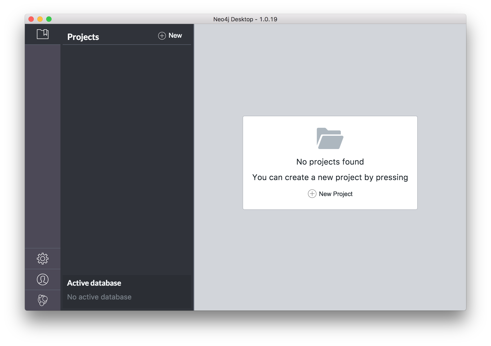
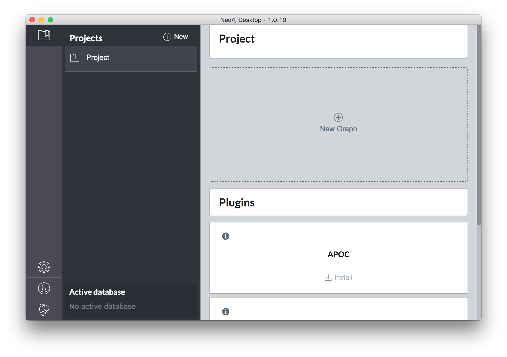
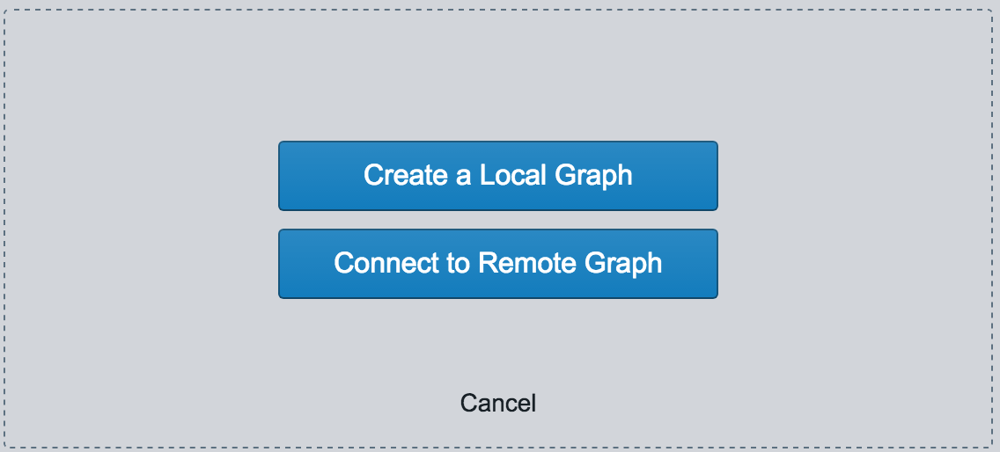
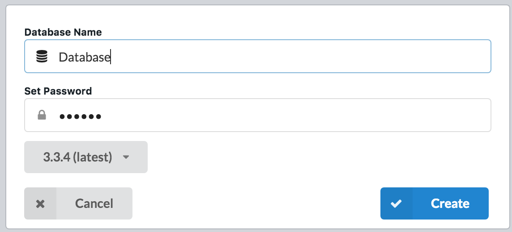
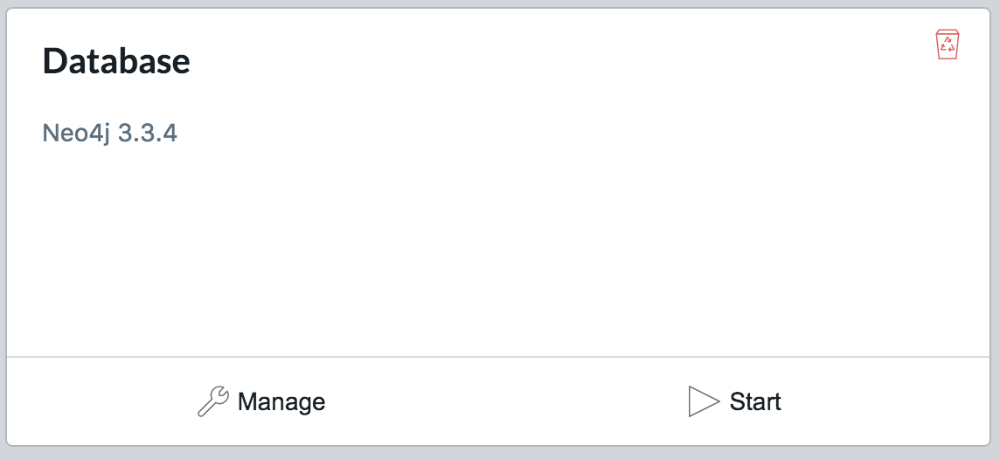
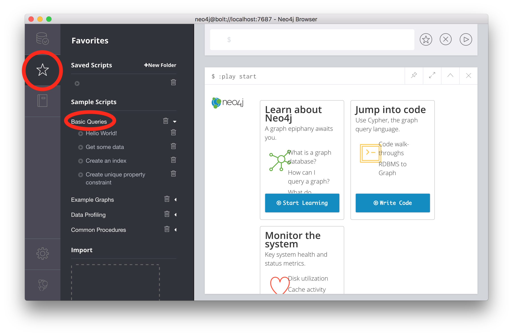
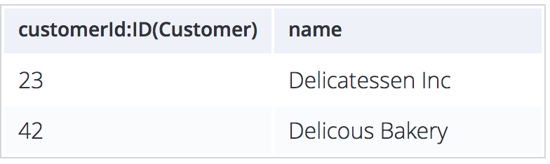
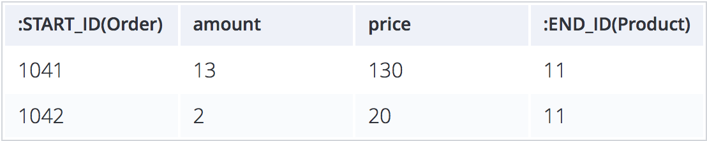
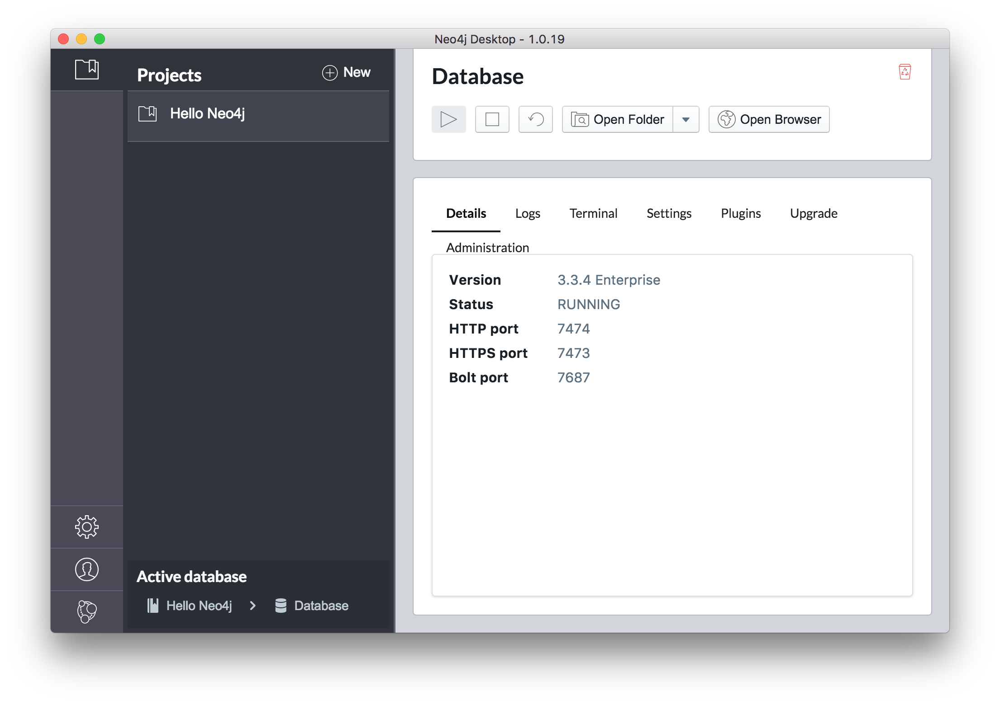
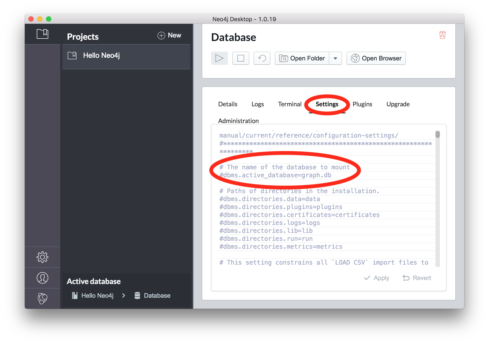

Neo4j是在市面上用的比较多的一款NoSQL图形数据库，它能将数据用由节点和边构成的图表示出来，无论是从数据的可视化来看，还是从分析数据之间的关系上来看都是非常好的一款数据库。
安装
推荐安装官方提供的Desktop版本，安装真的非常方便。
新建工程&数据库
打开你下载到的App，你会看到这样的页面：

点击New创建一个新的Project，像这样：

把鼠标移到项目名称附近会出现修改按钮，可以修改项目名称，点击New Graph创建新的图数据库。

我们选择Local。

输入数据库的名字和密码，点击Create，数据库就创建出来了。
开启数据库服务器
创建完数据库之后就会看到这样的画面：

点击Start，服务器就启动了。
打开Neo4j交互式界面
默认配置下，访问http://localhost:7474即可进入交互式页面。
可以在自己的浏览器上访问这个页面，也可以点击Manage后点击Open Browser直接在Neo4j提供的浏览器窗口中访问。
按照页面上的提示输入用户名密码即可与Neo4j进行交互。
常用Neo4j语句
Neo4j并不使用常见的SQL语句来进行增删查改操作，而是使用了自己制作的一套名叫Cypher的语言。
打开官方例子，就能学到一些简单的Cypher查询语句。

如果想深入学习Cypher语言（和其他图数据库、Neo4j相关），推荐阅读官方推荐的参考书目，其中好几本都是可以免费获取电子版的。
导入大量数据
Neo4j有多种方式从关系型数据库中导入数据，主要有这几种：
- 逐条
CREATE - 使用
LOAD CSV语句导入CSV - 使用
neo4j-admin import工具导入CSV
当数据量大的时候，推荐使用最后一种。
neo4j-admin import使用说明
neo4j-admin import是官方附赠的CSV导入工具。
首先你需要准备好CSV文件，至于这个怎么来我就不管了，你从关系型数据库导出也好，用程序生成出来也好，只是千万要记得Neo4j导入的时候如果碰到"就会报错，所以必须要转义成\"，如果你在不支持raw string的语言里，那你很有可能要写成\\\"，还有要注意导出CSV的时候数据中本来的,号也要替换掉（我的做法是替换成中文，）。
一般的做法是将所有同类型节点做成一个csv，将关系做成另外一个csv。
最好在第一行加上每列的类型，像这样：
节点表：

关系表：

:START_ID是指连接开始的节点的ID，:END_ID就是指连接结束的节点。
然后就是导入了，先找到这个数据库到对应的文件夹，点击manage页面下的Open Folder就能找到其位置：

然后cd到这个目录下面，执行实际的导入命令：
1 | ./bin/neo4j-admin import \ |
如果没有报错就说明导入成功了。
要让数据库服务器在提供数据时使用我们刚刚导入的数据库文件，你需要修改：

将dbms.active_database前的#去掉，然后将graph.db改成你导入好的数据库文件名称，再Apply（会重启数据库）即可。